«
⇧
INDONESIA
The rich and stunning nation of Indonesia provides a special fusion of culture, adventure, and
relaxation. There is something for everyone on the more than 17,000 islands, which range from breathtaking
beaches to historic temples, beautiful rainforests, and lively cities. The food is great and unique, with
influences from all across Asia, and the people are friendly and hospitable. Moreover, Indonesia is home to some
of the most beautiful natural wonders on earth, including Mount Bromo and Komodo National Park. Indonesia is a
place that will mesmerize and inspire you whether you want to explore nature, become immersed in local customs,
or just unwind on a beautiful beach.
PLACES TO VISIT
1. BALI
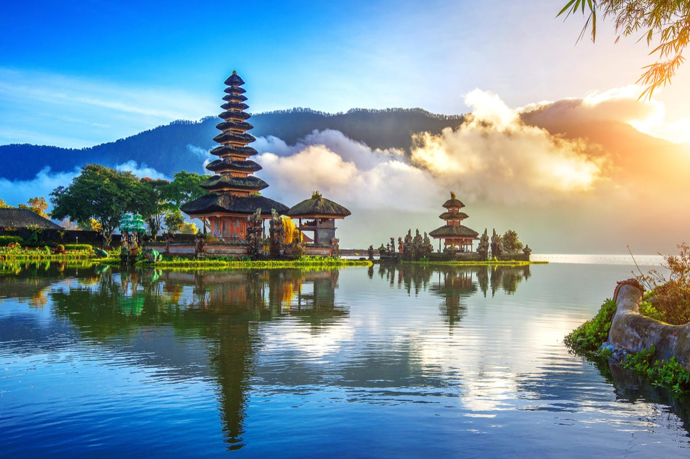
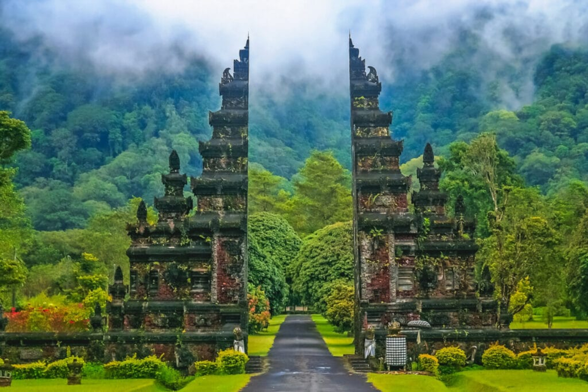
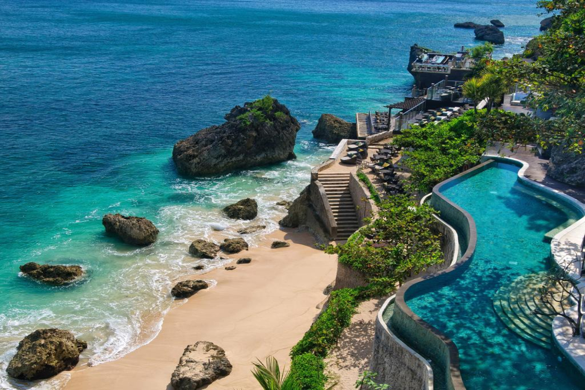
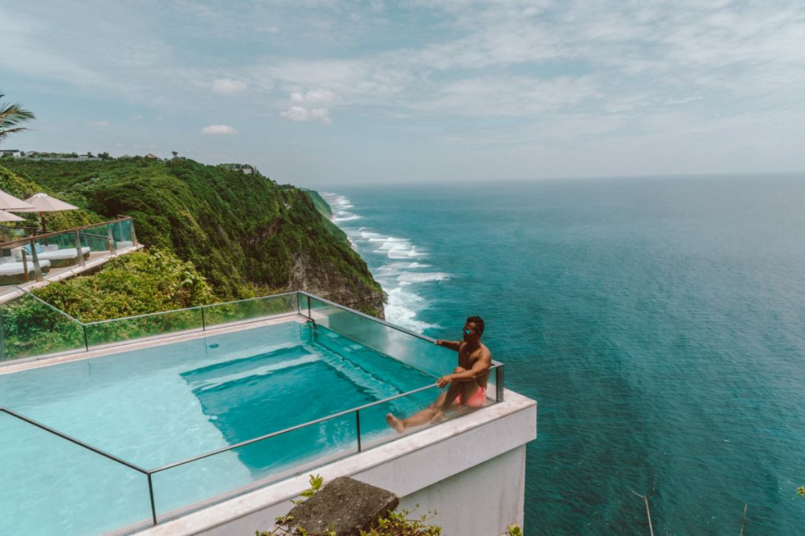
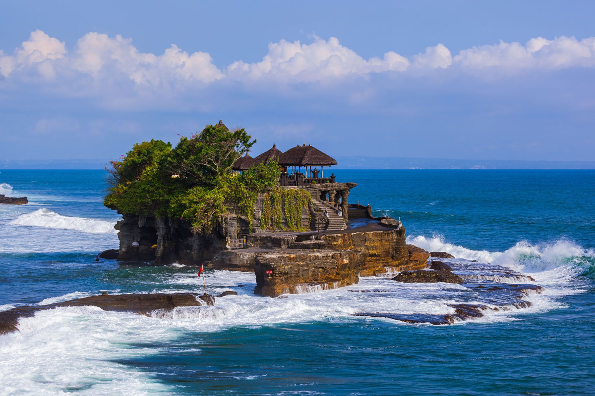
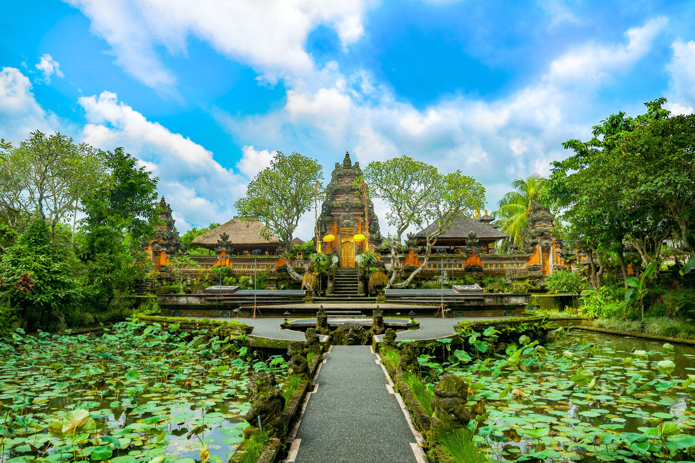
WHY VISIT BALI?
- From Tanah Lot or Uluwatu Temple, watch the sunrise or sunset.
- A Kecak "fire & trance" dance takes place.
- Goa Gajah (Elephant Cave), Tegalalang Rice Terraces, Gunung Kawi, and Tirta Empul are among of the
cultural attractions close to Ubud that you should see (temple).
- Hike to the top of Mount Batur.
2. NUSA PENIDA
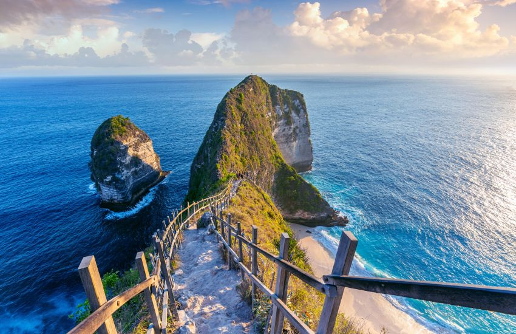
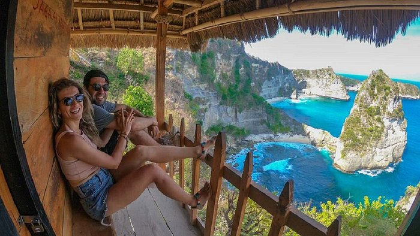
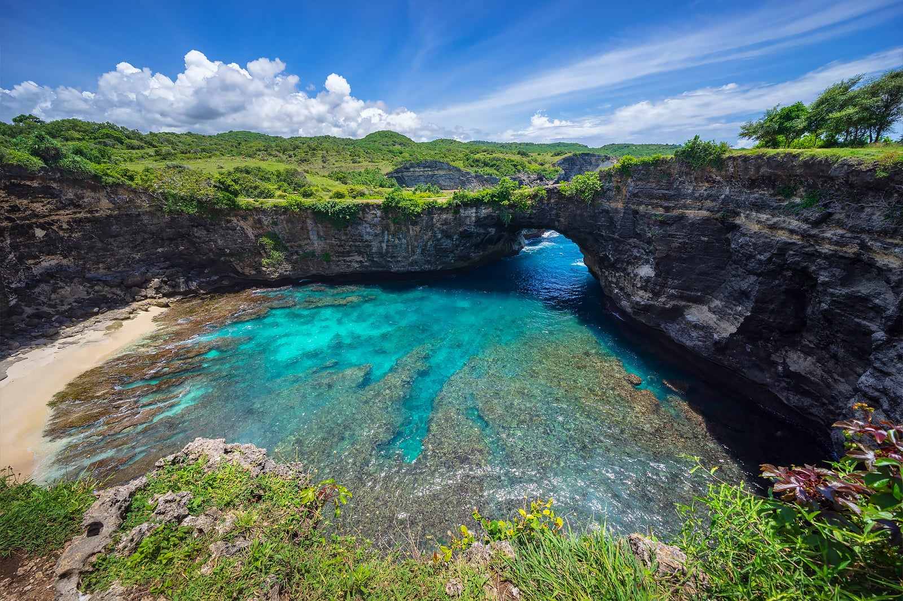
WHY VISIT NUSA PENIDA?
- A day tour that explores Nusa Penida Island's coast.
- Visit Kelingking Beach, Atuh Beach, Angel's Billabong, and Broken Beach to take in the amazing vistas.
(Pasih Uug).
- Scuba dive in Crystal Bay.
- Go to bed in a treehouse.
3. KOMODO ISLANDS
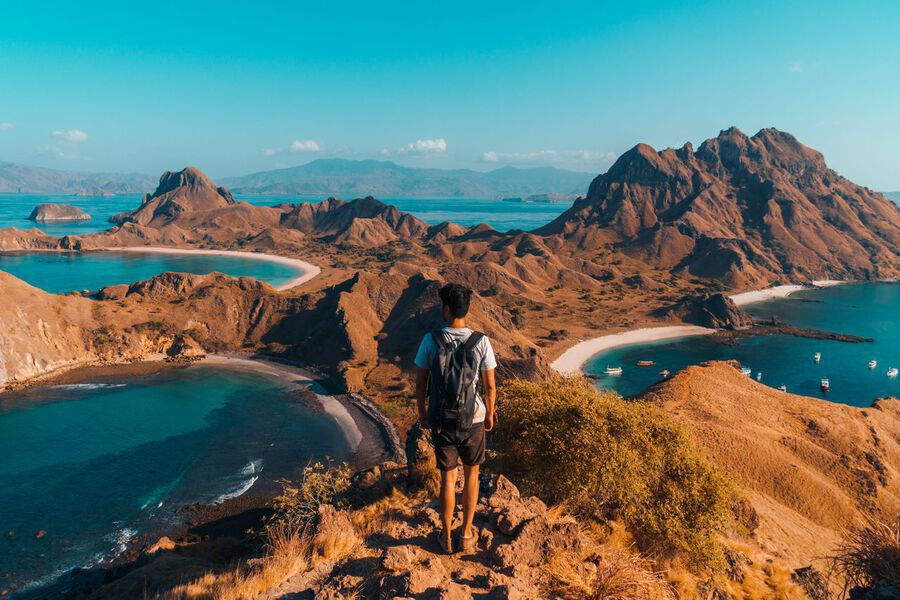

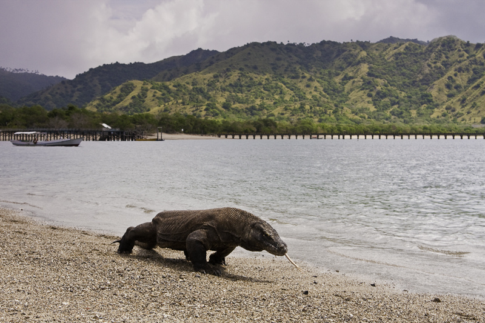
WHY VISIT KOMODO ISLANDS?
- Stalk Komodo Dragons, the largest lizard in the world, on Rinca and Komodo Islands.
- Swim, walk, and sunbathe at Pink Beach.
- Go on a hike to Padar Island's summit.
- View breathtaking spots for diving and snorkeling.
- Enjoy speedboat day trips or take it easy on a multi-day LOB cruise around the island.